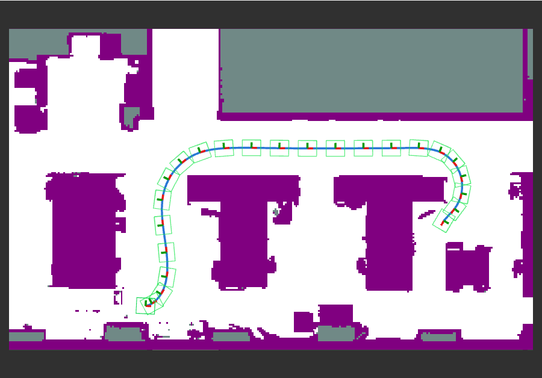
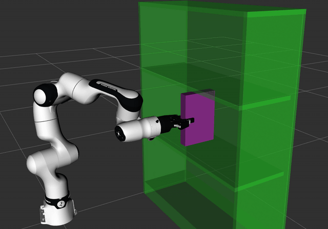

ROS 2#
Two ROS 2 planner plugins run geodex inside Nav2 and MoveIt 2. geodex_nav2_planner is a
global planner for the Nav2 planner server, and geodex_moveit is a planner for MoveIt 2
planning pipelines. Both load through pluginlib next to the stock planners, take their settings
from ROS parameters, and plan with geodex’s G-RRT* and smoother.

Plan a path on \(\mathrm{SE}(2)\) with planner_server for a mobile base between
the desks of an office, and show it in RViz with the global costmap and the robot’s
footprint.

Plan a joint path for a fixed-base arm with move_group, under a Euclidean or
kinetic-energy metric, and execute it on mock hardware.
What each package provides#
|
|
|
|---|---|---|
Plugin |
|
|
Base class |
|
|
Plans for |
a base pose \((x, y, \theta)\) |
the active joints of a fixed-base arm |
Metric |
left-invariant metric on \(\mathrm{SE}(2)\) times a clearance factor |
Euclidean, or the kinetic energy of a geodex robot model |
Collision checking |
the footprint polygon against an exact distance transform of the costmap |
geodex’s VAMP sphere model of the robot, or the planning scene |
Repository |
geodex_nav2_planner, Apache-2.0 |
geodex_moveit, Apache-2.0 |
Supported distributions#
Both plugins build for the two long-term-support releases of ROS 2.
Distribution |
Ubuntu |
Nav2 |
MoveIt 2 |
|---|---|---|---|
Jazzy Jalisco |
24.04 |
1.3 |
2.12 |
Lyrical Luth |
26.04 |
1.5 |
2.15 |
Install with pixi#
pixi installs ROS 2 from RoboStack,
builds geodex and the OMPL fork that holds G-RRT*, builds the plugin with colcon, and runs its
tests. Each repository has one pixi environment per distribution, jazzy and lyrical, for
Linux x86-64 and macOS arm64.
Clone the repository and run the tests.
git clone https://github.com/utiasSTARS/geodex_nav2_planner.git cd geodex_nav2_planner
pixi run -e jazzy test # or -e lyrical
git clone https://github.com/utiasSTARS/geodex_moveit.git cd geodex_moveit
pixi run -e jazzy test # or -e lyrical
Open a shell in the environment and source the install space.
pixi shell -e jazzy source install/jazzy/setup.bash
GEODEX_SOURCE_DIR=/path/to/geodex in front of a pixi run command builds against a local
geodex clone instead of the geodex release the plugin uses by default. A pixi build of the
plugin runs only inside its pixi environment.
Install into a colcon workspace#
On a machine with ROS 2 from apt, build geodex, the OMPL fork and, for MoveIt, VAMP into a
prefix of their own, then build the plugin in your workspace against that prefix. Run the
commands from the plugin’s clone, for example under ~/ros2_ws/src.
bash scripts/build_deps.sh /opt/geodex_deps
rosdep install --from-paths . --ignore-src --skip-keys geodex
colcon build --packages-select geodex_nav2_planner \
--cmake-args -DCMAKE_BUILD_TYPE=Release -DCMAKE_PREFIX_PATH=/opt/geodex_deps
bash scripts/build_deps.sh /opt/geodex_deps
rosdep install --from-paths . --ignore-src --skip-keys geodex
colcon build --packages-select geodex_moveit geodex_moveit_demos \
--cmake-args -DCMAKE_BUILD_TYPE=Release -DCMAKE_PREFIX_PATH=/opt/geodex_deps